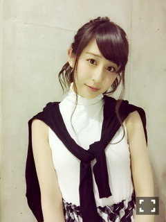
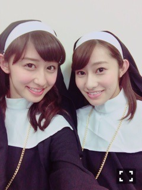

| 2015/05 24 Sun | 斎藤ちはる よ！こ！は！ま！(´ >∀<｀)ゝ |
ちはるーむへようこそ\( ˆ ˆ )/
温かいコメント、たくさんありがとうヽ(；；)丿
私は私らしく頑張るからね。
両立も頑張るよ。
ちゅ
今日の横浜での個別握手会は
モノトーンな服装でやりましたー♡

下はチェックのフレアスカートだよ〜
皆さんに
大人っぽいね！とか
色っぽいね！ってたくさん言ってもらえて
恥ずかしかったけど、
すごく嬉しかった(*/ω＼*)
メンバーもすごい褒めてくれた(*/ω＼*)
特にいくちゃん！！
あのいくちゃんに褒められると
やっぱなんか恥ずかしいー( ´ｰ`)♡
やっぱり握手会は楽しいなー♡
また来てね(*/ω＼*)
今週のNOGIBINGO!4に、シスターとして出演しました！！
メンバーにもスタッフさんにもファンの方にも似合ってるってたくさん言っていただけました\( ˆoˆ )/
まいまいは相変わらず可愛かったです。
さすが聖母。
それにしても玲香と顔が似てる...笑
この写真にはびっくりした...
シンメトリーか\( ˘-˘ )/笑

オーエン\( ˘-˘ )/
そしてそして、NOGIROOMにも出演しました♡
ジェラードピケのルームウェアがすごくお気に入りだから、いつか握手会で着たいなって思ってるよ(﹡ˆ ˆ﹡)
ちなみに、オススメしたチーズケーキは
BAKEっていうお店のケーキ♪
いつも並んでて中々サッと買えないから
すごく嬉しかったなー\( ˆ ˆ )/♡
無言になるくらい美味しくいただきました。。笑
そういえば、みなさんのオススメの曲
たくさん携帯ん中入れて、
たくさん聴いてるよ〜♡
やっぱり、さすが！！！
いい曲ばっかり！！！
んー。ライブいきたい。。
フェスとかいってみたい。。♡
教えてくれてありがとう(﹡ˆ ˆ﹡)
これからもいい曲あったら教えてねー(﹡ˆ ˆ﹡)
それと、たくさんパソコンについて教えてくれて、ありがとう(﹡ˆ ˆ﹡)
みなさんのデータを基に
家族とも相談して買うね(﹡ˆ ˆ﹡)
モバメに送ってる、でこ写真が好評で
すごいうれしー♡
また撮っておくるね♡
では！おやすみなさい〜
ばいるんっ
るんるんっ
ちはるんっ
(´>∀<｀)ゝ